V
Voltage
Monitoring voltage conditions and identifying abnormal variations that may affect equipment.
Power quality affects equipment reliability, energy efficiency, and operational continuity. Our solutions help organizations understand electrical conditions and improve the performance of critical power systems.

Electrical equipment can be affected by disturbances in the quality of the power supplied to it. These disturbances may affect equipment performance, reliability, and operational continuity.
Elitech Engineering Services provides engineering engineering focused on understanding power conditions, identifying potential issues and implementing appropriate solutions.
Effective power-quality management starts with understanding the electrical conditions affecting equipment and operations.
Monitoring voltage conditions and identifying abnormal variations that may affect equipment.
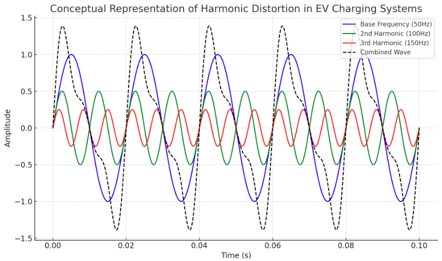
Understanding harmonic distortion and its potential effect on electrical systems and equipment.
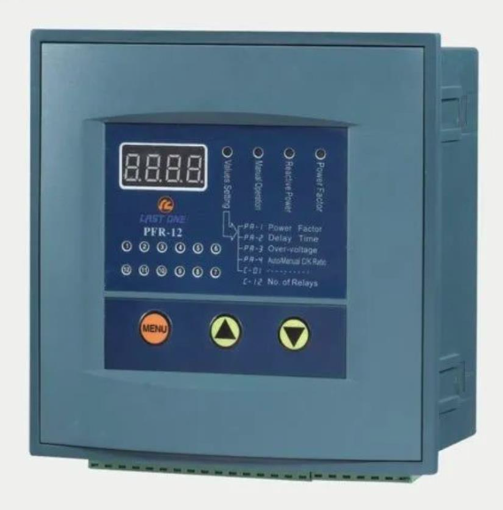
Assessing power factor conditions and identifying opportunities for improved electrical efficiency.
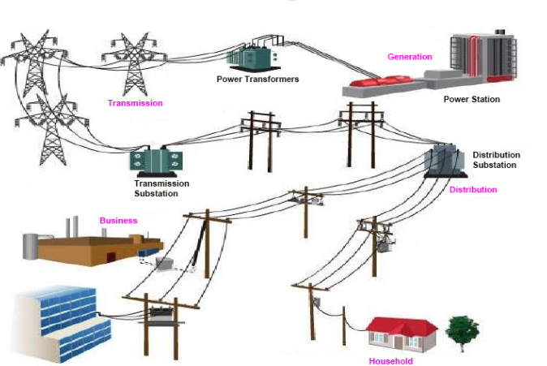
Identifying electrical disturbances such as surges and transient events.
From identifying electrical disturbances to engineering corrective action, our approach focuses on improving system reliability and protecting critical equipment.
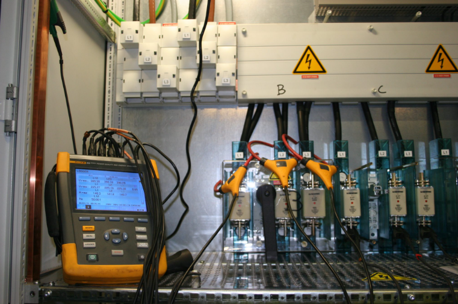
Assessment of electrical conditions to identify potential power-quality concerns affecting facility operations.
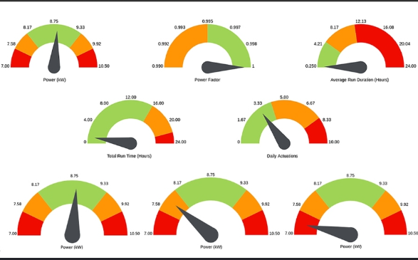
Monitoring and review of electrical parameters to make informed engineering decisions.
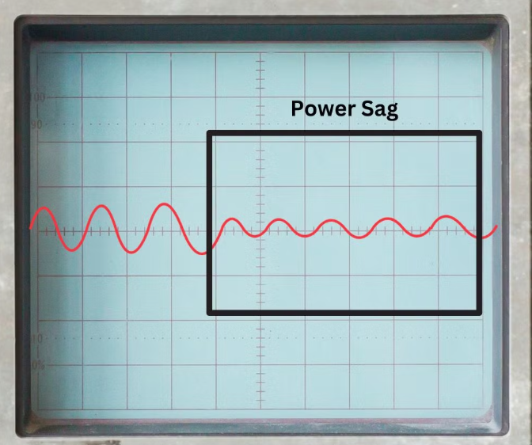
Investigation of voltage conditions and disturbances that may affect sensitive electrical equipment.
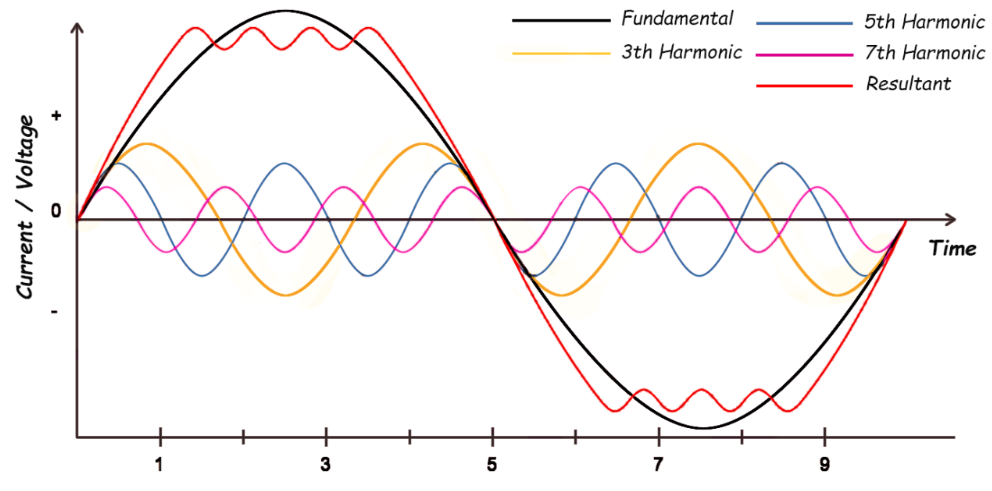
Engineering for identifying harmonic distortion and understanding its effect on electrical systems.
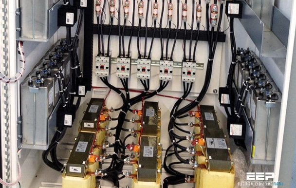
Engineering for evaluating power factor conditions and potential improvement measures.
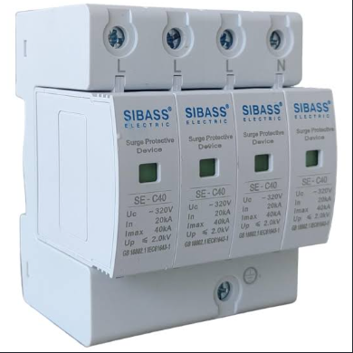
Engineering for protecting electrical infrastructure from damaging surge and transient conditions.
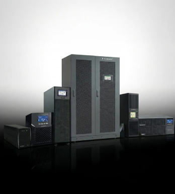
Engineering involving UPS systems and critical power continuity requirements.
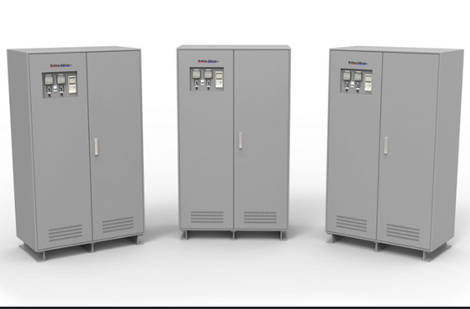
Voltage regulation engineering for equipment requiring improved electrical stability.
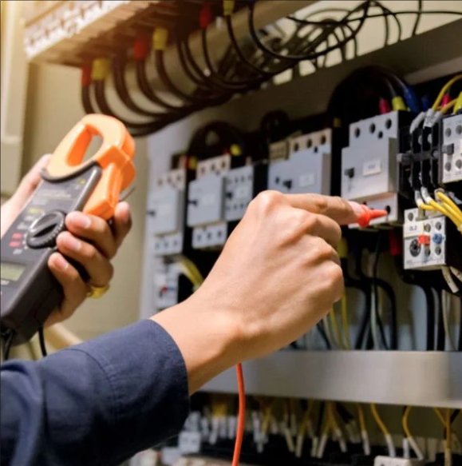
engineering for addressing identified power-quality concerns through appropriate engineering measures.
Understanding electrical disturbances helps organizations protect equipment and maintain dependable operations.
Variations in voltage can affect sensitive electrical and electronic equipment.
Distorted electrical waveforms can contribute to undesirable system conditions.
Short-duration disturbances can potentially damage or disrupt sensitive equipment.
Poor power factor can reduce electrical system efficiency and increase unnecessary demand.
A structured process helps ensure that power-quality concerns are properly understood before corrective measures are recommended.
Understand the facility, electrical infrastructure and operational requirements.
Examine relevant electrical parameters and identify abnormal operating conditions.
Interpret observed conditions and determine possible sources of electrical disturbances.
Recommend appropriate engineering measures to improve reliability and system performance.
Power-quality requirements vary between facilities. Our engineering approach considers the application, equipment and operational requirements when engineeringing corrective solutions.
Engineering for improving voltage stability and protecting sensitive electrical loads.
Integration considerations for UPS and backup power systems engineering critical loads.
Engineering for protecting infrastructure and sensitive equipment from transient conditions.
Engineering for understanding and addressing harmonic-related concerns.
Assessment and engineering focused on improved power factor performance.
Clear technical observations and reporting to engineering-informed infrastructure decisions.
Reliable electrical power contributes directly to equipment performance, operational continuity and long-term infrastructure value.
A better understanding of electrical conditions can help protect equipment and improve reliability.
Stable electrical infrastructure engineering ensures dependable day-to-day operations.
Understanding electrical performance can help identify opportunities for improved efficiency.
Appropriate power-quality measures can help reduce exposure to damaging electrical disturbances.
Technical measurements and analysis provide useful information for infrastructure planning.
Well-managed electrical infrastructure contributes to sustainable operational performance.
Talk to Elitech Engineering Services about power quality assessment, electrical infrastructure, voltage regulation, UPS, AVR, and related engineering requirements.